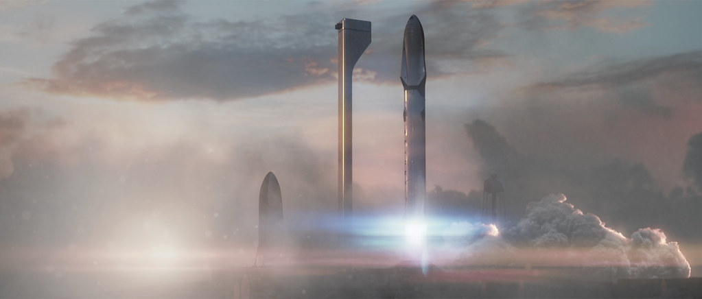

Il registro è successivo all’ultima revisione editoriale. Le serie sono state ricalcolate; l’interpretazione richiede un nuovo controllo.
La tesi
Una promessa di calendario e una prova tecnica non sono la stessa cosa. Il programma Starship va giudicato su entrambe: bisogna registrare le scadenze mancate, ma anche riconoscere i risultati parziali, senza promuoverli a dimostrazione del sistema completo.
Conservare ciò che fu detto
Nel 2016 SpaceX presentò una visione di trasporto interplanetario. Era un progetto di massima, non la scheda tecnica di un mezzo pronto al volo. La forza di quella presentazione non stava soltanto nelle dimensioni: riuso, rifornimento nello spazio e produzione del propellente su Marte venivano messi dentro una sola architettura. Non bastava arrivare una volta; occorreva immaginare un sistema capace di sostenere viaggi ripetuti.
Nel 2017 arrivarono una revisione e obiettivi più precisi. La trascrizione SpaceX dell'IAC, pagina 9, indicava la finestra marziana del 2022 e, per il 2024, due navi cargo e due con equipaggio. La formulazione era un obiettivo, non una garanzia. Questa distinzione non autorizza però a cancellare le date dopo che sono passate: furono una parte concreta della comunicazione del progetto e influenzarono le aspettative.

.jpg){kind=link}
La prima prova di volo del sistema integrato Starship/Super Heavy avvenne il 20 aprile 2023, come documenta il resoconto NASA del novembre 2023, nella sezione sul progresso HLS. Il programma non aveva quindi portato il sistema BFR/Starship su Marte nella finestra 2022. Non serve dilatare questo giudizio fino a una previsione definitiva di fallimento: è sufficiente registrare che quello specifico obiettivo non fu raggiunto.
Il risultato più utile del confronto non è un punteggio fra ottimisti e pessimisti. È la scomposizione di un annuncio: che cosa si voleva ottenere, entro quando, con quale architettura e quali dipendenze. Se l'architettura cambia, la vecchia data conserva il suo valore storico, ma non diventa automaticamente il calendario della nuova configurazione. Il progetto può migliorare proprio mentre si allontana dalla promessa iniziale.

Che cosa resta dell'idea, che cosa cambia
Dire che Starship discende dall'ITS è corretto se si parla dell'aspirazione al trasporto riutilizzabile e interplanetario. Sarebbe fuorviante se si intendesse che il veicolo odierno è semplicemente il rendering del 2016 finalmente costruito. Dimensioni, materiali, superfici di controllo, modalità di ritorno, interfacce con il suolo e organizzazione delle prove hanno attraversato revisioni. La monografia segue quella storia; qui interessa capire come cambia il criterio con cui la valutiamo.
Una revisione può rimuovere un ostacolo e introdurne altri. La scelta di un materiale modifica fabbricazione, protezione termica e massa; una strategia di cattura trasferisce una parte del problema dal veicolo alla torre e alla precisione del ritorno. Non è corretto descrivere ogni cambio come improvvisazione. Non è corretto neppure presentarlo come prova che ogni scelta precedente fosse già parte di un piano perfetto. La lettura ragionevole è una ricerca progettuale, con decisioni prese sulla base di vincoli e risultati che si conoscono progressivamente.
Per un sistema riutilizzabile il requisito finale non è soltanto sopravvivere. Occorrono ritorno, recupero, condizioni dell'hardware, ricondizionamento, secondo volo e ripetizione abbastanza regolare da sostenere un servizio. Un componente può soddisfare alcuni di questi passaggi senza qualificare il sistema completo. È il motivo per cui una cattura del booster non equivale al riutilizzo dell'intera Starship, e un rivolo del booster non certifica la vita utile della nave.
| Voce | Prova o documento datato | Che cosa consente di dire | Che cosa non certifica |
|---|---|---|---|
| Cargo su Marte nel 2022 | IAC 2017, p. 9; primo sistema integrato in volo nel 2023 | Quella finestra-obiettivo non fu raggiunta dal sistema. | Che ogni successiva architettura sia destinata a fallire. |
| Trasporto con equipaggio nel 2024 | IAC 2017, p. 9; attività di sviluppo registrate | Era un obiettivo marziano dichiarato, non la data di un contratto HLS. | Che la preparazione di un calendario equivalesse alla qualifica umana. |
| Rifornimento nello spazio | NASA CFMPP, slide 8, prova del 14 marzo 2024 | Trasferimento interno LOX dimostrato. | Trasferimento fra navi o campagna tanker completa. |
| Riuso completo | Nel registro: recuperi e progressivi distinti per Ship e Super Heavy | Occorre verificare ciascun veicolo e il suo successivo impiego. | Che un recupero o il rivolo di un booster qualifichi anche la nave. |
| Calendario HLS | NASA, revisione del 27 febbraio 2026 | Dimostrazione in orbita terrestre 2027; allunaggio obiettivo 2028. | Che queste missioni siano concluse o siano un calendario per Marte. |
La prova piccola che non va sminuita né ingrandita
Il trasferimento del 14 marzo 2024 è un caso particolarmente istruttivo. La presentazione NASA CFMPP, slide 8, conferma il movimento di ossigeno liquido tra serbatoi della stessa Starship. Precisa anche che non si trattava di un trasferimento fra due navi. Quel documento offre due informazioni insieme: la prova fu reale e la prova aveva un perimetro circoscritto.
È stato un passo verso il rifornimento nello spazio, non un semplice effetto scenico. Ma due veicoli devono anche incontrarsi, mantenere una configurazione controllata, collegare gli impianti, gestire quantità e condizioni dei fluidi e separarsi in sicurezza. Conservare propellente per un periodo significativo aggiunge un'altra famiglia di problemi. La dimostrazione interna non permette di saltarli sulla carta.
Non tutti i risultati sono quindi confrontabili con una risposta binaria, riuscito o fallito. Una prova può raggiungere l'obiettivo del suo esperimento senza raggiungere l'obiettivo del programma. Il rischio editoriale è usare lo stesso aggettivo per entrambi. Nel primo caso si parla di un risultato tecnico circoscritto; nel secondo si parla della disponibilità di una capacità operativa. La matrice mantiene questa separazione.
Anche la quantità deve restare legata alla sua fonte. Il dossier non divide un carico nominale per una quantità trasferita e non ne ricava il numero delle missioni tanker necessarie. Servirebbero massa effettivamente richiesta, perdite, margini, configurazione dei veicoli e strategia di campagna. Un numero preciso ottenuto con ipotesi fragili non sarebbe una previsione più seria; sarebbe soltanto un numero più appariscente.
Perché il calendario è un problema di sistema
Un razzo può migliorare rapidamente e non essere ancora pronto per la missione che ne giustifica il finanziamento. Le attività HLS richiedono requisiti propri: trasferimento di equipaggi, permanenza nello spazio, operazioni lunari e sicurezza. Il risultato di un volo di sviluppo terrestre non risponde automaticamente a quelle condizioni. Neppure la presenza di un contratto trasforma un calendario in una qualifica ottenuta.
La revisione NASA del febbraio 2026 ha indicato una dimostrazione in orbita terrestre per Artemis III nel 2027 e l'allunaggio obiettivo per Artemis IV nel 2028. Sono date annunciate dall'agenzia, non missioni concluse. Non le presentiamo come una scadenza SpaceX per Marte, né usiamo la revisione per correggere retroattivamente ciò che NASA aveva pianificato prima.
La domanda da porre a un calendario è quali attività lo rendano possibile. Una campagna di rifornimento dipende dal volo del veicolo, dalla disponibilità dei tanker, dai pad, dal ritmo di integrazione, dalle autorizzazioni e dalla conservazione dei fluidi. Il numero di prove riuscite in una di queste aree non elimina le dipendenze nelle altre. Un'analisi del rischio non consiste nel sommare difficoltà a caso: consiste nel riconoscere quelle che possono bloccare il percorso della missione.
Questo aiuta anche a comprendere perché l'esperienza Falcon sia preziosa ma non sufficiente. SpaceX ha imparato a gestire recuperi e campagne ad alta frequenza; una nave grande, riutilizzabile, con scudo termico e propellenti criogenici in una campagna orbitale aggiunge però problemi differenti. Usare il successo Falcon come garanzia sarebbe un salto logico. Ignorarlo del tutto eliminerebbe una parte reale dell'esperienza industriale.
Una critica che possa essere smentita
La critica utile formula condizioni verificabili. Se si parla di rifornimento fra navi, si chiede una dimostrazione fra navi e dati sul trasferimento. Se si parla di riuso completo, si chiede il rivolo dei veicoli recuperati e una documentazione del loro stato. Se si parla di servizio frequente, si osserva una serie di missioni, non un singolo record. Se si parla di Marte, si guarda alla missione marziana e alle capacità che la rendono sostenibile.
La stessa disciplina deve valere per le difese del progetto. «Era soltanto un obiettivo» è una precisazione legittima, ma non può diventare un modo per rendere qualsiasi previsione immune alla verifica. E una scadenza mancata non prova, da sola, che l'architettura non possa funzionare. Qui vengono mantenuti entrambi i conti: il calendario degli annunci e il calendario delle prove.
Il costo collettivo non scompare perché il programma è sperimentale. Le prove richiedono infrastrutture e occupano territorio, producono rumore e impongono procedure di sicurezza. Le autorizzazioni valutano perimetri specifici; non sono una certificazione generale di assenza d'impatto. Per quel tema rimandiamo al percorso su territorio e ambiente: lo sviluppo tecnico e l'accettabilità delle operazioni sono domande collegate, non identiche.
La possibilità di cambiare il giudizio è il punto centrale. Una prova nuova deve poter promuovere un risultato da annunciato a dimostrato, ma soltanto per la capacità effettivamente osservata. Una perdita o una revisione devono poter modificare la lettura di affidabilità e calendario. Il dossier conserva la data di ogni confronto e rimanda al registro delle prove per i voli successivi: non trasforma questa analisi storica in un bollettino che si aggiorna da solo.
Fonti, date e ruolo dei documenti
- SpaceX, Making Humans a Multiplanetary Species, IAC 2016. Annuncio storico del proponente. Documento: 2016-09-27; controllo: 2026-10-12. Presentazione ufficiale ITS. Testimonia l'aspirazione e l'architettura presentate allora, non un veicolo operativo.
- SpaceX, Making Life Multiplanetary, trascrizione IAC 2017. Documento del proponente, ospitato da Relayto. Documento: 2017-09-28; controllo: 2026-10-12. Pagina 9, figure 15–17; obiettivi 2022 e 2024. Cargo per la finestra 2022, due cargo e due navi con equipaggio nel 2024: erano obiettivi dichiarati. Si cita il testo, senza riprodurre le figure protette.
- NASA, ESDMD Update al NASA Advisory Council, novembre 2023. Agenzia pubblica, resoconto dello sviluppo. Documento: 2023-11-17; controllo: 2026-10-12. Slide Starship Human Landing System Progress; evento del 20 aprile 2023. Documenta il primo volo del sistema integrato. Un primo test non è una missione marziana.
- NASA, Cryogenic Fluid Management Portfolio Project. Agenzia pubblica, resoconto tecnico. Documento: 2024-09-05; controllo: 2026-10-12. Slide 8 (pagina PDF 8), 2020 Tipping Points - SpaceX. Conferma la prova del 14 marzo 2024 tra serbatoi nella stessa Starship; specifica che non era ship-to-ship.
- NASA, nuova architettura Artemis. Programma pubblico, calendario annunciato. Documento: 2026-02-27; controllo: 2026-10-12. Artemis III e Artemis IV. Dimostrazione in orbita terrestre nel 2027 e allunaggio obiettivo nel 2028. Calendario subordinato alla prontezza dei sistemi, non risultato acquisito.
- Archivio pubblico di Rivoluzione Spaziale. Dataset editoriale riconciliato. Documento: 2026-10-10; controllo: 2026-10-12. dati.json, schemaVersion 1; registro missioni e voli dei veicoli. Deriva dai workbook del sito, con confronto Wikipedia documentato. Non è un dataset ufficiale SpaceX né una verifica primaria indipendente di ogni riga. La copia di calcolo e le impronte sono pubbliche.
I calcoli del registro sono un'elaborazione originale del sito; le interpretazioni sono editoriali. I modelli didattici non sono dati osservati.
Rifare i calcoli
Risultati, formule e identificatori JSON · Copia esatta del registro usato · Codice del generatore · Codice dei modelli.
Impronta SHA-256 della copia del registro: 4d0fa657bd254af140d593fb1f1b028fed13c5baa55571b934408e776d4b668c. Istruzioni e limiti.